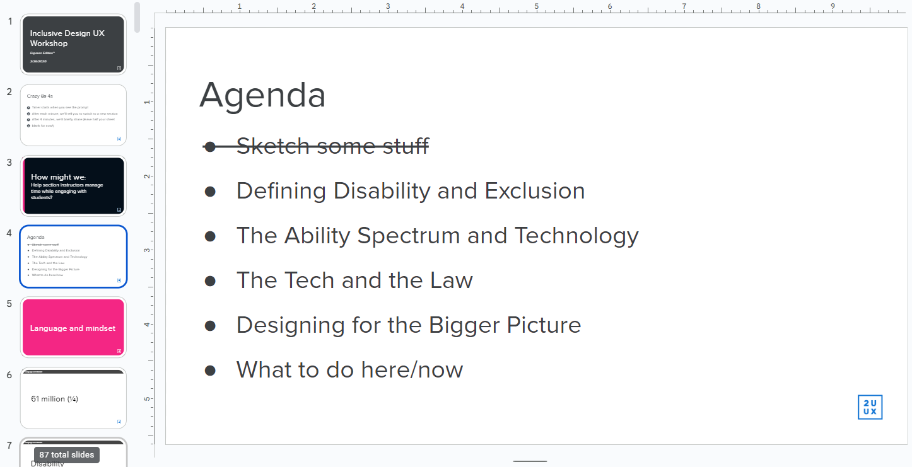
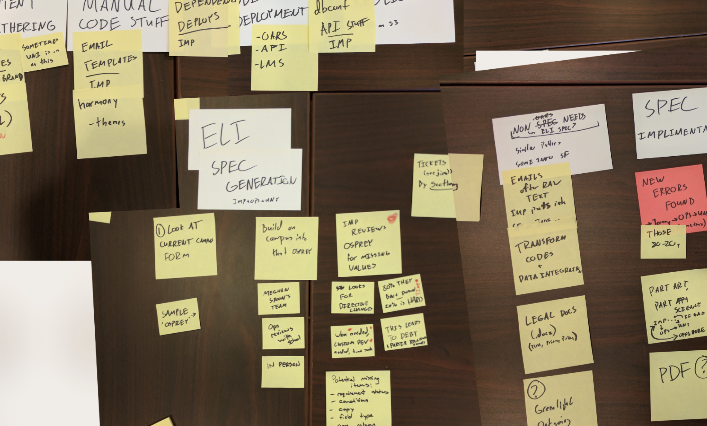
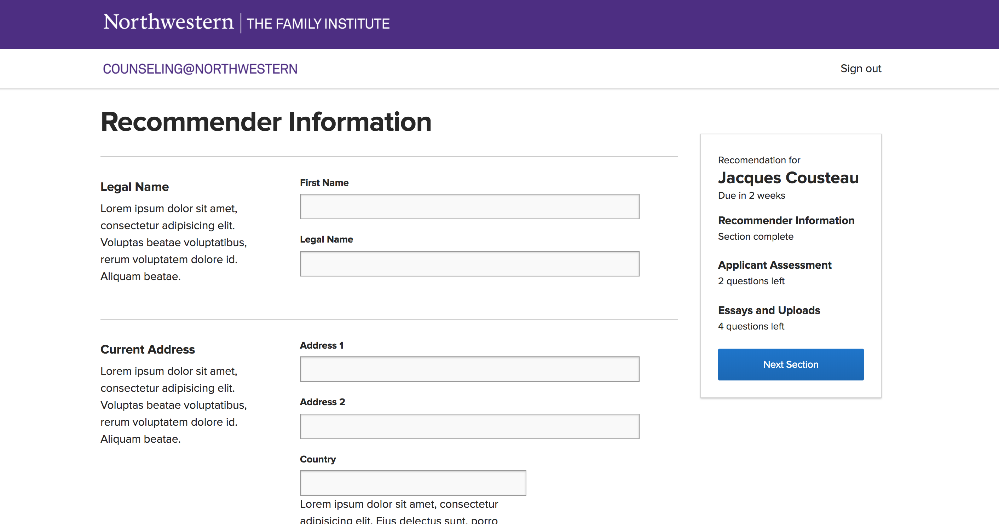

Matt Lepage
Work Showcase
-

Slides from an accessibility training session I ran for our design teams. These trainings center around how approaching disability as a non-static, societal construct helps us as designers notice when our designs might be excluding individuals. You can view an example presentation focusing on form interactions here.
I've ran many iterations on this slide show so far, working with designers, developers, and management. The largest (shown here) was a series of 4-hour workshops for our UX team including an even split of lecture, design exercises (i.e. crazy 8s, critiques), and open discussion/Q&A. The goal is to get the entire design team thinking more about inclusion early in the process and learning the language to communicate accessibility needs in their designs to managers and devs.
 -

In my time at 2U I've contributed to 4 iterations of our design system, starting with the CSS based Harmony (now largely defunct, but still in use on a few products), following a few internal experiments with react and shared Sketch/Figma libraries, and now Paragon (run by our partner company edX). This pattern for button designs is of a format I advocated our design team to adopt, including information on the color contrast values for those states. There was a lot of design debate about whether to avoid disabled buttons entirely as they're bad for communicating status, but ultimately we decided to have a visual handy even if we hoped to rarely use it.
While working with design systems I strongly advocate for designers to be explicit about usage, as a lot of design decisions and intent can be lost in handoff while a design system is being build. This (now slightly outdated, tbh) forms style and usage guide for our input component details layout and content guidelines for labels, helptext, and validation messaging. We're currently working on a redesign of this component, pulling both error text and help text above the input for better compatibility with browser autofill, and fixing some of the color contrast problems with that light red.

-

A user story map for our learning platform. 2U's learning management system had its first VPAT in 2022, and the first step was for us to build a definitive listing of all user stories so that each pathway could be fully tested via assistive technology.
Artifacts like this often start with larger brainstorming sessions, with multiple devs, PMs, and analysts all contributing their understanding of what the system does or should do. In this example, I moderated a session of about 12 participants to map out the needs of a suite of internal tools for our application system. These sessions work best when you only have one or two markers/writers in the room, so that you can keep everyone focused on one or two cards at a time (and it's best to have a VERY large table).
 -

My first and largest solo design project at 2U has been owning multiple redesigns of our online application suite - a long form that users fill out to apply to online programs. When I joined the project they were running into major problems with a legacy system becoming unwieldy, while also outputting form content that was raising accessibility concerns from partners. This hierarchy-focused layout aimed to make question dependencies and contexts explicity clear, while building guardrails on our content design.
I quickly discovered much of the content design flaws of our application forms were due to our internal form building tools, and convinced leadership to move for a full redesign of those systems to better safeguard future products. This project that found itself working with an extremely tight deadline. We opted to prioritize function over form, running user research sessions with our internal users. As this was an internal tool, we could prioritize moving fast and training our users over high visual polish. Our internal user base was thrilled to have this tool despite it's rough edges and we've been steadily adding new quality of life features every since.


A late stage wireframe for our application hub, with an experimental progress tracker on the right. This specific design didn't test well and was not adopted in my time with the project, but pieces of it are still being iterated in our newer solutions.
-

An series of user workflow diagrams for our admissions team. Our application forms have to communicate with wildly unique university data systems, and before this project launched in 2018 the data export jobs were done by hand. As part of designing these pages, I spent weeks shadowing the teams responsible for those automated tasks to fully understand what was needed, and how our tools could best support these internal teams.
-

A journey map of the steps users take as they consider applying to one of our graduate programs. This chart was made after a month of interviewing team leaders to build a clear understanding of what tech stacks users were interacting with when. 2U's early growth meant a number of systems with overlapping audiences were built in parallel, and our team was working to align product goals with a unified user story
{kind=link}
{kind=link}
{kind=link}
Volunteer Work
-

Web mockup for the Indie Maker Syndicate (IMS) home page. In 2020, I built brand and design assets for an online games expo which featured 50 games from indie devs. As major gaming festivals were being cancelled for COVID safety, many small developers were left with no means of promoting their games - this stage is essential for getting a new game off the ground. We organized a small team (mostly from MAGFest) and ran a full mini-convention/fundraiser over twitch, videos of which you can see here.
My role within in this org was "the one guy who knows color and web design", so I figured out a branding style (mostly "hardware and crafting stuff I have around the house" to get at the DIY vibe we wanted) and all of our web design and assets. I also ran interviews with developers, learning about their weird games and how they approach the game design process, and a game jam to help new developers get started in the hardware games space.


As with other streaming-based projects, this meant building a visual system for our organization and extrapolating it to a ton of slightly different camera/window setups, while working to keep certain portions of the space shared across views so we could have consistent messaging for our fundraising portion and important social links.
-

A screenshot of a livestream overlap for developer lets play of the Brooklyn-made indie game Slime San. The actual footage form the event is kinda grainy, but I got to sit on a stage with the Fabraz devs and talk about their game and also about monster hunter. Great night.
-

Stream overlay from our 2021 Extra Life fundraiser. These visuals were used to get precise element positioning in our streaming software, though most of the assets here are non-static: the donation ticker is a website I built hooked into the charity API, the bottom banner scrolls every 50 seconds, etc.
-

Image of a mess of artboards for our charity streams. Over 5 years of hosting an event that relies on 2 capture cards, 4 webcams and 5 PCs I've learned to uh... never assume all of the things will always work. So we built out tons of variants for every permutation to make sure the live content is as good as possible.